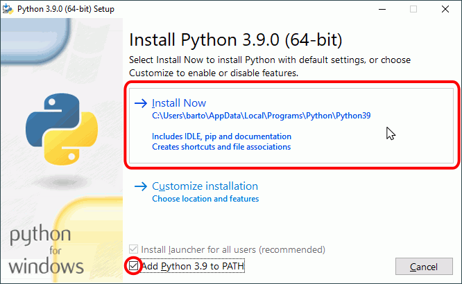
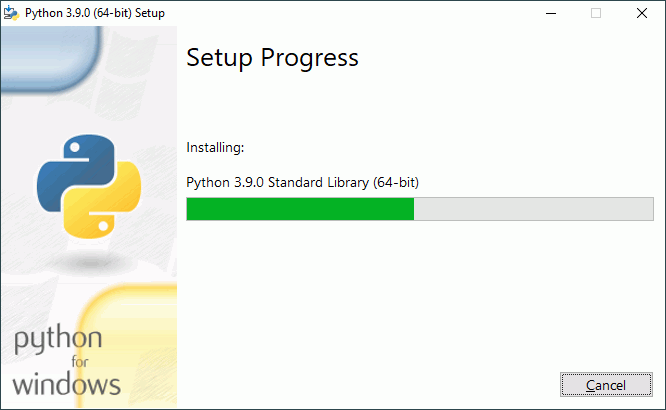
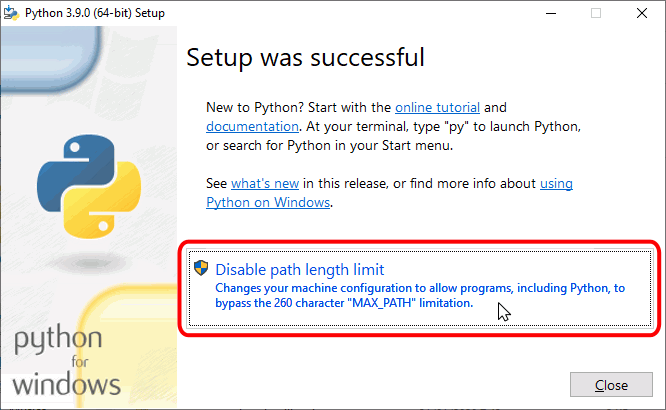
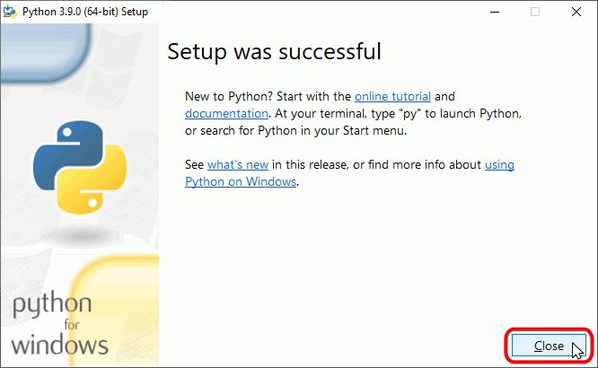
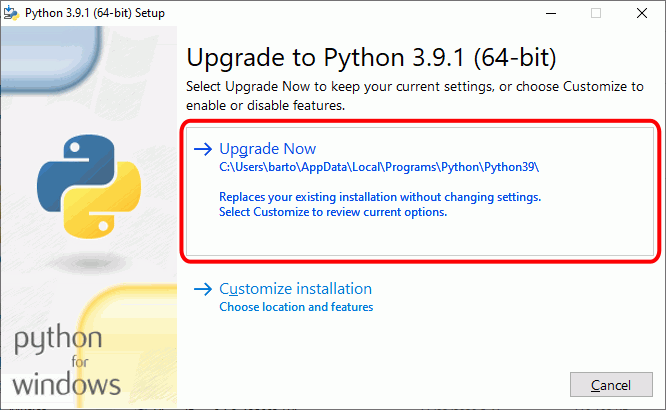
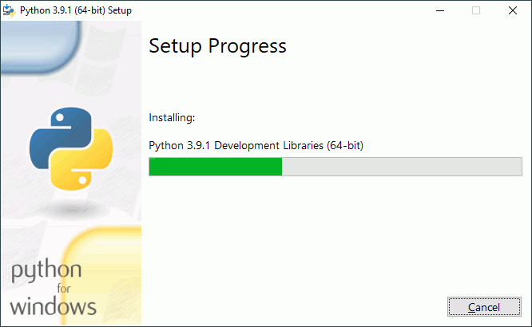

En la lección Historia de Python se comentan las diferentes versión de Python existentes. En esta lección se comenta cómo conseguir e instalar la versión recomendada para seguir este curso.
Python permite tener instaladas distintas versiones de Python (por ejemplo, Python 3.8 y Python 3.9).
En este curso se recomienda tener instalada únicamente una versión de Python, la más reciente. Por ello, si va a instalar una versión de Python 3.9:
si ya tiene instalada una versión anterior (Python 3.8 o anteriores) y no necesita mantenerla, se recomienda desinstalar primero la versión anterior.
si ya tiene instalada una versión de Python 3.9, no es necesario desinstalar nada, pero se recomienda actualizar a la última versión disponible de Python 3.9.
Nota: Tenga en cuenta que al instalar una nueva versión de Python es necesario reinstalar todos los módulos y bibliotecas que se hubieran instalado en la versión anterior si se quieren utilizar en la nueva versión.
Página de descarga de Python 3.9.1, desde la que se pueden descargar otros instaladores (por ejemplo, para Windows de 32 bits).
En cdlibre.org hay una sección dedicada al intérprete de Python, con información detallada sobre las últimas versiones publicadas para Windows.
Instalar Python
Una vez descargado el instalador, haga doble clic en él para iniciar la instalación.
Nota: Las imágenes siguientes corresponden a la instalación de Python 3.9.0 (64 bits), pero son similares en cualquier versión 3.X.
La primera pantalla permite seleccionar las opciones de instalación haciendo clic en "Customize installation", aunque en principio, no es necesario modificarlas. Tan sólo se aconseja marcar la casilla "Add Python 3.9 to PATH" para poder ejecutar programas desde la línea de comandos. Para continuar, haga clic en "Install Now".

A continuación se iniciará el proceso de instalación. La instalación de Python puede durar varios minutos.

Una vez completada la instalación, se mostrará la pantalla final.
Si el instalador detecta que Windows tiene activado el límite de 260 caracteres de rutas de archivos (una limitación de versiones antiguas de Windows que se mantiene por compatibilidad con aplicaciones antiguas), le ofrecerá la opción de eliminar la limitación. Si utiliza alguna aplicación que necesite tener ese límite activado, no lo desactive. En caso contrario, haga clic en el botón "Disable path length limit". Si en el futuro descubriera que alguna aplicación necesita tener el límite activado, abra el editor del registro de Windows y modifique la clave HKEY_LOCAL_MACHINE\SYSTEM\CurrentControlSet\Control\FileSystem\LongPathsEnabled (el valor 0 significa que el límite está desactivado y 1 significa que está activado).

Finalmente, haga clic en en el botón "Close" para cerrar el programa de instalación. ¡Ya puede empezar a programar en Python!

Actualizar Python
Una vez descargado el instalador, haga doble clic en él para iniciar la actualización. Si el instalador detecta una subversión anterior de la misma versión de Python (por ejemplo si el instalador de Python 3.8.X detecta que está instalado un Python 3.8.X anterior), ofrecerá la opción de actualizar.
Nota: Las imágenes siguientes corresponden a la instalación de Python 3.8.1 (64 bits), pero son similares en cualquier versión 3.X.
La primera pantalla permite seleccionar las opciones de instalación haciendo clic en "Customize installation", aunque en principio, no es necesario modificarlas. Para continuar, haga clic en "Upgrade Now".

A continuación se iniciará el proceso de actualización. La actualización de Python puede durar varios minutos.

Una vez completada la actualización, se mostrará la pantalla final. Haciendo clic en en el botón "Close" se cerrará el programa de instalación.
Modificar o reparar Python
Si el instalador detecta que ya está instalada la misma versión de Python (por ejemplo si el instalador de Python 3.9.1 detecta que ya está instalado Python 3.9.1), ofrecerá la opción de modificar, reparar o desinstalar Python.
Nota: Las imágenes siguientes corresponden a la instalación de Python 3.9.1 (64 bits), pero son similares en cualquier versión 3.X.
Actualizar pip
A lo largo de su historia, Python ha utilizado varios sistemas para la distribución de módulos:
distutils fue el primer sistema incluido en la biblioteca estándar en 1998 y sigue siendo la base de los sistemas posteriores. Desde Python 2.7, no se recomienda usarlo directamente.
pip es el instalador "oficial" actual. Desde 2014 (Python 3.4), el módulo pip se instala junto con Python.
Aunque pip se instala con Python, pip se desarrolla de forma independiente, así que es conveniente actualizar pip cuando se publica una nueva versión.
Para saber la versión de pip instalada, ejecute en una ventana de terminal la orden: pip --version
pip --version
pip 20.2.3 from c:\users\barto\appdata\local\programs\python\python39\lib\site-packages\pip (python 3.9)
Nota: La versión instalada con Python 3.9.1 es pip 20.2.3, pero versiones posteriores de Python pueden incluir versiones posteriores de pip.
Para saber los paquetes instalados, ejecute en una ventana de terminal la orden: pip list
pip list
Package Version
---------- -------
pip 20.2.3
setuptools 49.2.1
WARNING: You are using pip version 20.2.3, however version 21.0 is available.
You should consider upgrading via the 'python -m pip install --upgrade pip' command.
Para actualizar pip, ejecute en una ventana de terminal la orden: python -m pip install --upgrade pip: